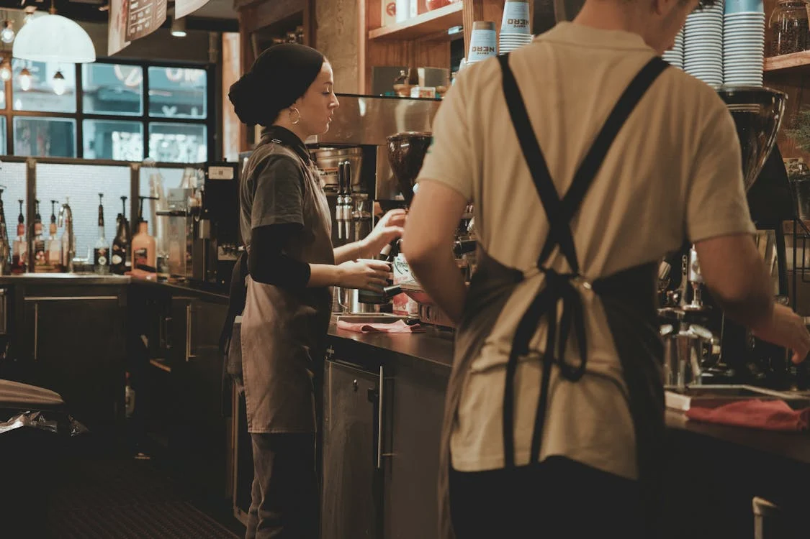
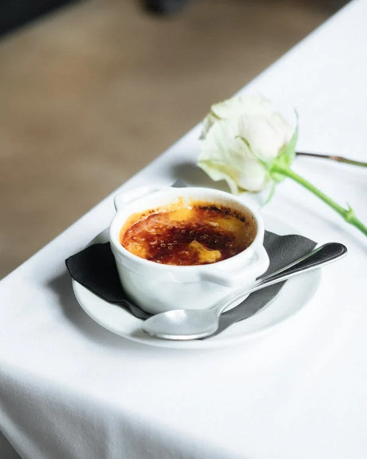
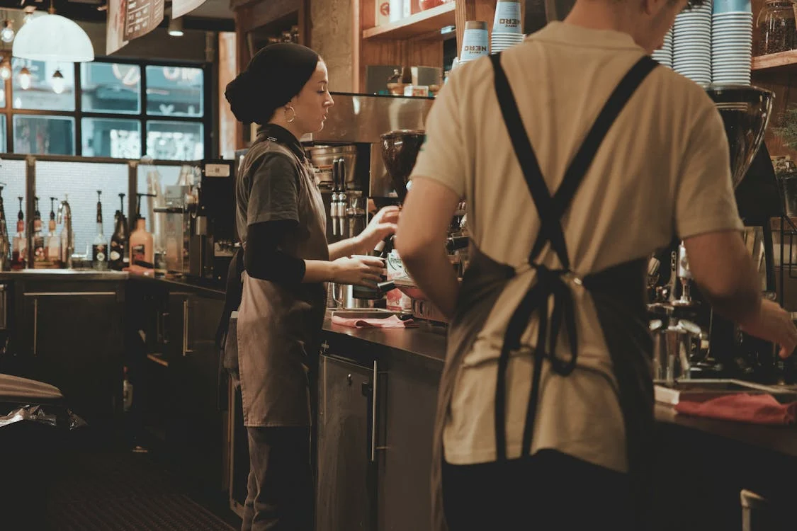
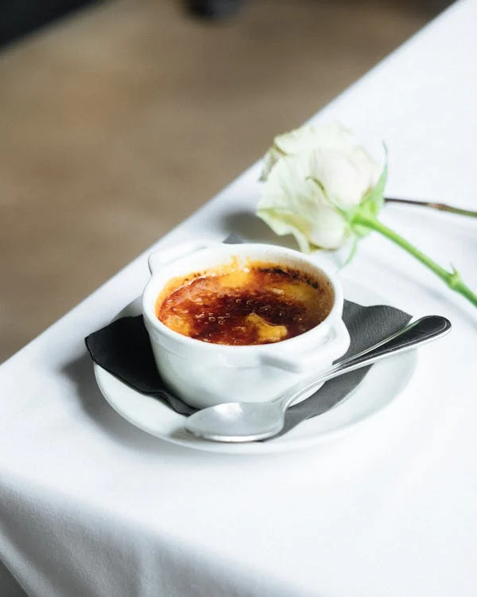

O Le Chat Noir nasceu em 1976, inspirado na rica tradição culinária francesa e na paixão por ingredientes frescos e de alta qualidade. Desde o início, nosso objetivo era criar um restaurante que não apenas servisse comida deliciosa, mas que também transportasse os clientes para a França com cada mordida.
O Le Chat Noir é mais do que apenas um restaurante. É um lugar onde você pode se conectar com a cultura francesa, experimentar a autêntica culinária francesa e criar memórias inesquecíveis com seus amigos e familiares.
Estamos comprometidos em proporcionar aos nossos clientes uma experiência gastronômica excepcional a cada visita. Ao combinar nossa herança francesa, filosofia culinária e paixão por ingredientes frescos, oferecemos um sabor único da França no coração da sua cidade.
 


